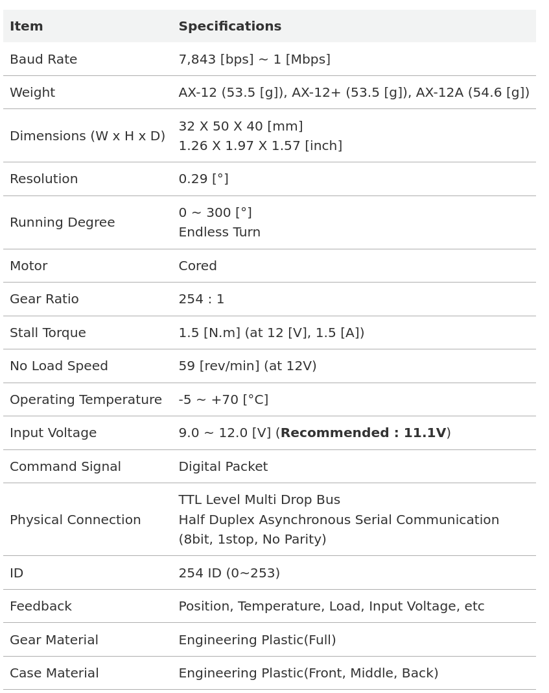
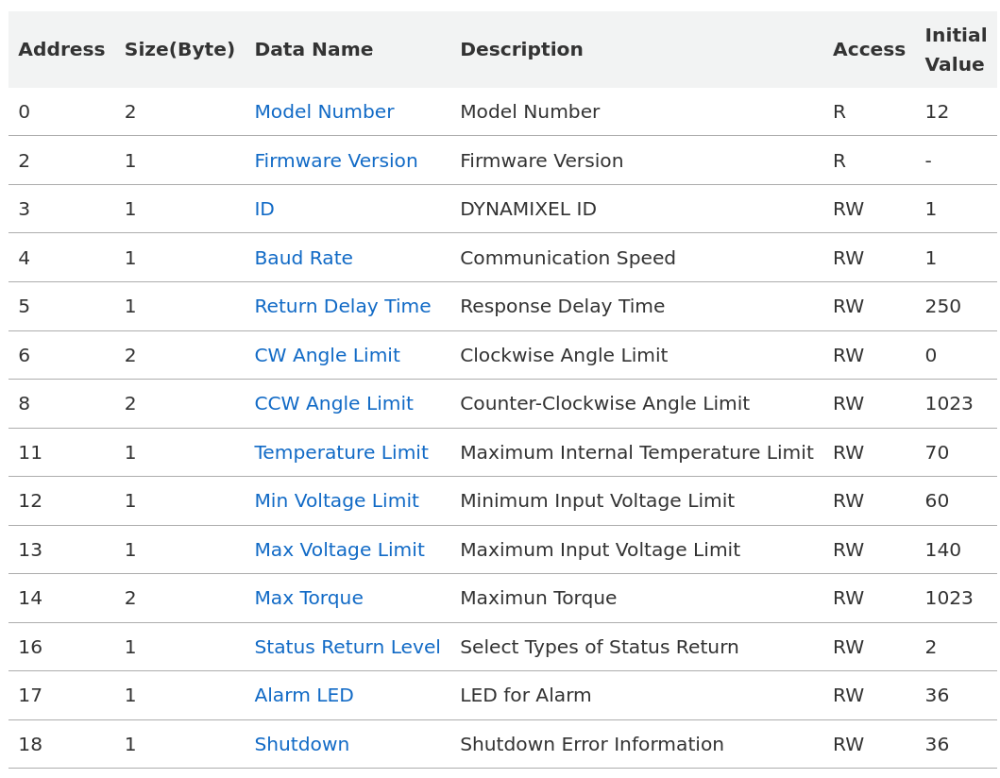
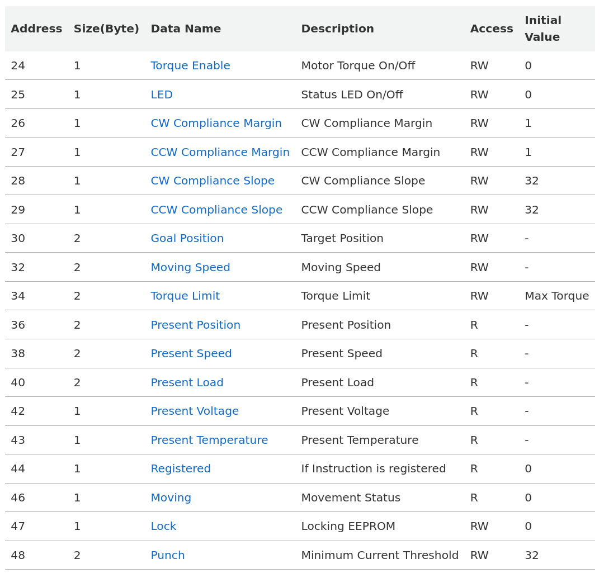

Matériel électronique
Descriptions des éléments
Nous nous sommes concentré sur les deux éléments centraux de la maquette :
les servomoteurs AX-12A (Dynamixel)
et le convertisseur d’interface U2D2
Servomoteur AX-12A (Dynamixel)
Un Dynamixel est un type de servo-moteur intelligent développé par la société ROBOTIS, largement utilisé en robotique (recherche, robots humanoïdes, bras robotiques, etc.).
1. Fonction principale
Le Dynamixel sert à générer un mouvement précis et contrôlé. Il peut être utilisé pour :
Articuler un bras robotique
Contrôler les jambes ou articulations d’un robot humanoïde
Piloter des mécanismes orientables (caméra, capteur, plateforme)
2. Particularité « intelligente »
Contrairement à un servo standard, un Dynamixel contient :
Un microcontrôleur interne
Un capteur de position (encodeur)
Des capteurs de courant, tension et température
Une interface de communication numérique (TTL, RS-485 ou CAN)
Ces éléments permettent au moteur :
De recevoir des ordres numériques (ex. : aller à 90°)
De renvoyer des informations (position, effort, température)
D’être chaîné avec d’autres Dynamixels sur une seule ligne de communication
3. Modes de fonctionnement
Selon le modèle, un Dynamixel peut fonctionner en :
Position Control Mode
Velocity Control Mode
Current (Torque) Control Mode
PWM Mode
Extended Position Mode
4. Avantages
Haute précision avec retour d’état
Communication série simplifiée (bus)
Compatible avec ROS, MATLAB, Arduino, Raspberry Pi
Grande fiabilité mécanique
5. Exemple d’utilisation
Un Dynamixel MX-28 peut être utilisé dans un bras robotique à 6 axes. Chaque axe reçoit une consigne via un contrôleur (ROS, MATLAB) et renvoie sa position réelle pour la boucle de rétroaction.
6. Documentation technique
{kind=link}

{kind=link}

{kind=link}

Les sources des images sont disponibles à cette adresse. A présent, interressons nous au convertisseur d’interface U2D2.
Convertisseur d’interface U2D2
1. Fonction principale
Le U2D2 (USB to Dynamixel 2) est un convertisseur d’interface permettant de relier un ordinateur ou une carte contrôleur à un ou plusieurs moteurs Dynamixel.
PC / Raspberry Pi / Arduino ⇄ U2D2 ⇄ Dynamixel(s)
Il convertit les signaux USB en signaux série TTL ou RS-485.
2. Rôle technique
Conversion de protocole : - USB → TTL (AX, XL, XM-T) - USB → RS-485 (XM-R, XH, PRO)
Le U2D2 ne fournit pas l’alimentation moteur
L’alimentation est externe (Power Hub recommandé)
3. Schéma typique de connexion
[PC / MATLAB / ROS]
|
USB
|
[U2D2]
|
[Dynamixel #1] ↔ [Dynamixel #2] ↔ ... ↔ [Dynamixel #n]
4. Avantages
Plug & play
Compatible avec tous les logiciels ROBOTIS
Fonctionne avec ROS, MATLAB, Python, C++
Diagnostic et mise à jour firmware possibles